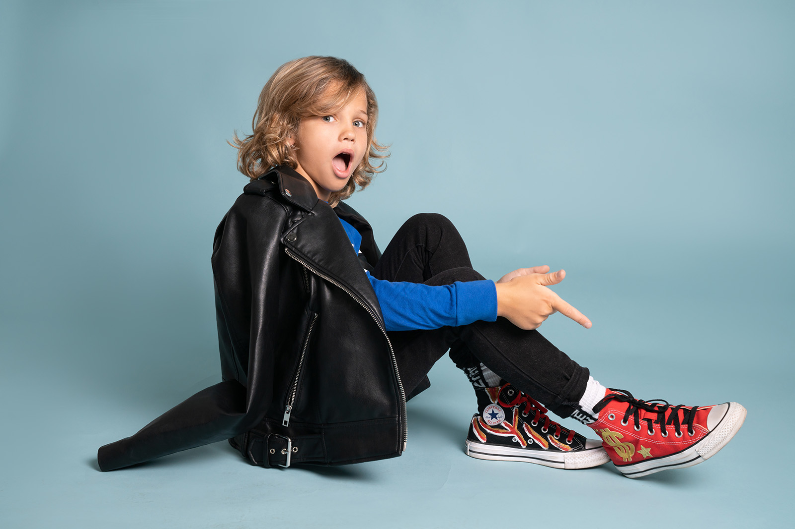

PLIVKA

|
PLIVKA
|
Home Galery About Contacts Location |
| Чоловічий портрет для Валентина Зйомка в стилі чоловічого портрета для пластичного хірурга Валентина. Альбом та історія створення студійного фотопроекту опис ідеї та процесу її реалізації. |
|
| Фотосесія закоханих у Парижі Фотозйомка в стилі лавсторі для Інни та Максима в Парижі. Альбом та історія створення вуличного фотопроекту. Опис ідеї та процесу її реалізації. |
|
| Індивідуальна Фотосесія для Дарини Фотозйомка в аутлет містечку Мануфактура для Дарини. Альбом та історія створення вуличного фотопроекту, опис ідеї та процесу її реалізації. |
|
| Літня Love Story Фотосесія Фотозйомка для закоханої пари Аліни та Петі. Альбом та історія створення фотопроекту в Межигір'ї опис ідеї та процесу її реалізації. |
|
| Чоловічий портрет у студії та кафе Фотографування чоловічого портрета для Дена. Альбом з історією створення студійного та вуличного фотопроекту. Опис ідеї та процесу її реалізації. |
|
| Лофтова весільна фотосесія для Анни та Юри Фотозйомка весілля у стилі лофт для пари Анни та Юри. Альбом та історія створення студійного фотопроекту, опис ідеї та процесу її реалізації. |
|
|  | Дитяче модельне портфоліо Зйомка модельного портфоліо для дітей Назара та Захара. Альбом та історія створення студійного фотопроекту опис ідеї та процесу її реалізації. |
| Фотосесія Дівич-вечора в стилі Pin-Up Фотозйомка в стилі Pin-Up дівич-вечора для Олени. Альбом та історія створення вуличного фотопроекту, опис ідеї та процесу її реалізації. |